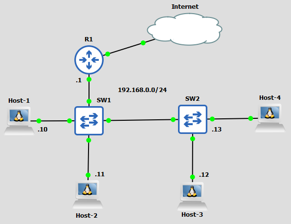

A
B
C
D
Enterprise sítě, datová centra atp. může stát každý výpadek připojení k Internetu statisíce, proto je nutné dbát na to, aby takové sítě byly redundatní.
Za redundantní síť můžeme považovat tu síť, kde při poruše 1 prvku nedojde k většímu omezení, potažmo úplné ztráty připojení k Internetu významné části sítě. Cílem redundantních sítí je právě minimalizovat dopady závad prvků sítě (Platí, že čím méně zařízení je ovlivněno poruchou jednoho prvku, tím lépe => menší ztráta zisku pro firmu).
Příkladem sítě, která není redundantní může být tato:
Potenciální výpadek R1, SW1 (a médii mezi nimi) totiž ohrozí velkou část sítě a postihne všechny hosty a servery.
Naštěstí jsou tyto sítě snadno přeměnitelné na redundantní.
Ptáte se jak?
Nejdříve je třeba najít potenciální prvek v síti, jehož výpadkem by byla ohrožená konektivita části sítě.
Kdybychom tedy měli takto analyzovat síť z předešlého obrázku, všimli bychom si, že takovými prvky jsou R1 a SW1. SW2 zde v tomto případě za velkou hrozbu nepovažujeme, protože jeho porucha by ohrozila pouze 2 hosty, který by se za předpokladu, že nemají více síťových karet, stejně nedalo moc dělat.
Nyní, když máme určené problematická zařízení, si řešení rozdělíme na dvě části.
První se bude týkat L2 zařízení. Jestliže je tedy potenciálním prvkem, jehož výpadek by ohrozil značnou část sítě, switch, tak přidáme do sítě další takové zařízení.
Při změně na L2 by tedy síť nově vypadala nějak takto:
OBRÁZEK!!!!
Když v tomto případě přidáme pouze jeden další switch, nějak zvlášť extra si nepomůžeme. Díky této změně se akorát tak změní prvek, kterým se teda tentokrát stál nově přidaný switch (To, jestli se hosti připojí k internetu, totiž bude záležet na novém switchi a R1).
Proto přidáme do sítě další switche, tak abychom měli k R1 více cest.
Konečná L2 redundantní síť tedy bude vypadat takto:
DALŠÍ OBRÁZEK!!!!
Nyní, když máme vyřešenou L2 redundaci, se můžeme přesunout na L3 redundanci. Stejně jako v předešlém případě máme problém s tím, že máme pouze jeden router, jehož porucha by pro nás znamenala ztrátu připojení k Internetu. Proto stejně jako v případě switchů přidáme další zařízení.
OBRÁZEK!!!
Na L3 nám však pouhé přidání dalšího routeru stačit nebude.
Proč?
Pokud chceme posílat data na Internet, musí mít zařízení nakonfigurovanou adresu výchozí brány. Ta se dá bohužel nakonfigurovat pouze jedna, tudíž by se při výpadku toho "aktivního" routeru musela řučně obejít všechna zařízení či by se musela upravit konfigurace DHCP.
Naštěstí pro nás existuje mnohem lepší a efektivnější řešení v podobě First Hop Redundancy protokolů.
Jako FHRP, First Hop Redundancy Protocol je označovaná skupina protokolů, které reagují na problematiku redundantní L3.
Problematiku redundantní L3 řeší tím, že umožňují skupině dvou či více routerů přidělit jednu společnou virtuální IP adresu.
Ta pak slouží jako výchozí brána pro hosty. Díky tomu může jeden router nahradit toho druhého bez toho aniž by se musela změnit síťová konfigurace hostů.
Po konfiguraci FHRP na všech routerech, během níž se určí jedna společná IP adresa, si mezi sebou routery určí, který z routerů bude ten aktivní (active) a kdo bude ten záložní (standby).
To, podle čeho si to routery mezi sebou určí, přímo záleží na vybraném FHRP.
Za aktivního routera považujeme ten router, který se aktivně chová jako výchozí brána a přes který hosti posílají pakety na Internet.
Záložní router je pak zas ten router, jež se standardně nechová jako výchozí brána, ale při výpadku aktivního routeru jej dokáže nahradit a stane se aktivním.
Jakmile je jasné, kdo je kdo, začnou si mezi sebou routery posílat multicasty (multicast je zpráva, která se pošle vybrané skupině zařízení), aby zjistili zda aktivní router stále běží.
Když aktivní router vypadne, přestane komunikovat s druhým routerem a aktivní roli přebírá jeden z dosud záložních routerů.
Na to, aby se záložní router stal aktivním routerem, potřebuje změnit MAC adresovou tabulku na switchích. To provede tím, že pošle gratuitous ARP zprávu (Gratuitous ARP zpráva je ARP reply zpráva, která se pošle bez toho aniž by o někdo žádal.
Máme následujicí síť:
Jak již bylo zmíněno na začátku této sekce, FHRP je skupina protokolů, který řeší problematiku redundantní L3.
Jmenovitě do FHRP skupiny protokolů patří:
Tyto protokoly se mezi sebou liší například v terminologii (Active/Standby X Master/Backup X AVG/AVF), vývojáři (Cisco propriétární X IETF) a v drobnostech z hlediska fungování (hlavně HSRP x VRRP).
Pro CCNA není třeba znát konfigurace.
HSRP, Hot Standby Redundancy Protocol je propriétární protokol společnosti Cisco.
Aktivní router názývá "Active" a záložní "Standby".
HSRP vybírá aktivní router na základě priority a v případě stejné priority na všech HSRP routerech ve stejné skupině na základě nejvyšší nastavené IP adrese na routeru.
HSRP dokáže loadbalancovat provoz pouze v rámci jiných vlan.
Tento protokol má 2 verze - HSRPv1 a HSRPv2. Ty se kromě lepší stabilizace od sebe liší napříkald v počtu povolených HSRP skupin, multicastové IP adrese a virtuální MAC adrese.
| HSRP verze | Multicastová IPv4 adresa | Virtuální MAC adresa | Počet povolených HSRP Skupin |
|---|---|---|---|
| HSRPv1 | 224.0.0.2 | 0000.0c07.acXX (XX je číslo skupiny) | 256 |
| HSRPv2 | 224.0.0.102 | 0000.0c9f.fXXX (XXX je číslo skupiny) | 4096 |
GLBP nebo-li Gateway Load Balancing Protocol je stejně jako HSRP Cisco propriétární protokol.
Možná si říkáte, proč by Cisco mělo 2 protokoly, které dělají to samé?
GLBP je totiž oproti HSRP zaměřený, jak už z názvu vyplývá, na loadbalancing a dokáže loadbalancovat provoz i v rámci jedné podsítě.
Mezi routery se volí AVG (Active Virtual Gateway), ostatní jsou AVF (Active Virtual Forwarder).
AVG může být zároveň i AVF
Pro posílání IPv4 multicastových zpráv používá adresu: 224.0.0.102 (Ano, stejnou jako HSRP).
Jako virtuální MAC adresu používají: 0007.6400.XXYY, kdy XX je číslo GLBP skupiny a YY je číslo AVF.
Routery si mezi ve skupině zvolí AVG - Active Virtual Gateway. Až 4 routery se stanou AVF - Active Virtual Forwarder, zbytek bude záložní.
Když host pošle ARP zprávu aby získal MAC adresu výchozí brány, dostane se na AVG, které hostovi přidělí MAC adresu jedné z aktivní AVF. Host poté bude všechny zprávy mimo síť posílat na danou AVF.
Zkusme si to ilustrovat na příkladu -
Máme tuto síť:
V síti nastavíme GLBP (ve skupině 15), kdy R1 bude AVG (a zároveň AVF) a ostatní pouze AVF.
Virtuální IP adresa bude 192.168.0.253
Pokud se host 1 bude snažit poslat něco přes výchozí bránu, bude potřebovat zjistit MAC adresu výchozí brány. Na ARP request odpoví R1.
R1 přidělí hostu 1 samo sebe jako AVF, pošle mu MAC adresu 0007.6400.0F01 Host 1 bude tedy brát R1 jako svoji výchozí bránu.
Když se host 2 bude snažit poslat něco přes výchozí bránu, zeptá se stejně jako host 1 AVG, jakou MAC adresu má výchozí brána, AVG mu pošle MAC adresu R2 (0007.6400.0F02).
Jestliže by se stalo, že by R2 selhalo, tak by jej nahradilo R3 či případně R1. Pokud by selhalo AVG, zvolí se nový AVG a síť bude fungovat dál.
Aktivuj v následujicí síti 192.168.0.0/24 GLBP na routerech R1, R2 a R3.
Udělej z R1 AVG.
Virtuální IP adresa bude 192.168.0.253
Začněme tím, že vytvoříme glbp skupinu 15 na R1:
R1(config)#interface gig0/0 R1(config-if)#glbp 15 ip 192.168.0.253
Vzhledem k tomu, že chceme, aby glbp bylo AVG, nastavíme i prioritu, platí zde pravidlo, že čím vyšší priorita, tím větší šance, že se router stane AVG, standardní priorita je jinak 100.
R1(config-if)#glbp 15 priority 255
Poté ještě na R1 nastavíme to, že pokud náhodou selže a jiný router převezme roli AVG, tak R1 se po nahození automaticky znovu stane AVG.
R1(config-if)#glbp 15 preempt
Pro kontrolu konfigurace glbp můžeme použít příkaz -
R1#show glbp
Na R2 a R3 pak nastavíme:
R2(config)#interface g0/0 R2(config-if)#glbp 15 ip 192.168.0.253 R3(config)#interface g0/0 R3(config-if)#glbp 15 ip 192.168.0.253
| Příkazy | Popis | Mód |
|---|---|---|
| vlan {vlan-id} | Vytvoří VLAN a přepne do VLAN interfacu | Global Config |
| name {vlan-name} | Pojmenuje VLAN | VLAN interface |
| switchport mode {access | trunk | dynamic desirable | dynamic auto} | Přepne interface do modu | Interface |
| switchport nonegotiate | Vypne DTP na interfacu | Interface |
| switchport access vlan {vlan-id} | Přiřadí VLANu k danému interfacu | Interface |
| switchport trunk encapsulation {protocol} | Nastaví trunking protokol na switchi | Global Config |
| switchport trunk native vlan {vlan-id} | Nastaví Native VLAN | Interface |
| switchport trunk allowed vlan {add | all | except | remove} {vlan-id} | Nastaví povolené VLANy na trunku | Interface |
| encapsulation dot1q {VLAN_ID} | Nastaví sub interface pro danou VLAN | router - sub interface |
| vtp mode {transparent | off} | Vypne VTP | Global Config |
| show interfaces switchport | Zobrazí informace o interfaci | Priviledged EXEC |
| show interfaces {interface-id} trunk | Zobrazí informace o truncích | Priviledged EXEC |
| show vlan brief | Zobrazí informace o VLAN | Priviledged EXEC |
| show vtp status | Zobrazí informace o VTP | Priviledged EXEC |
A
B
C
D